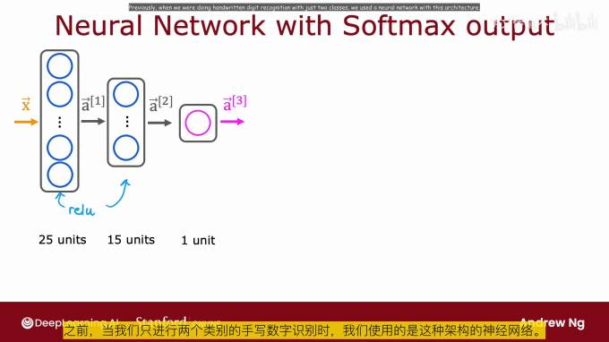
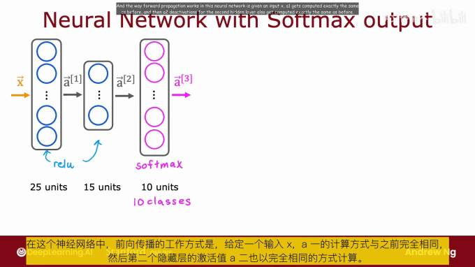
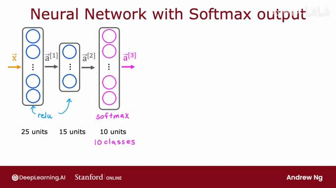
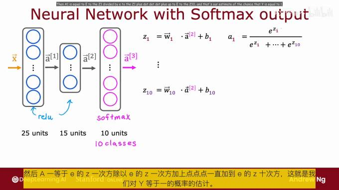
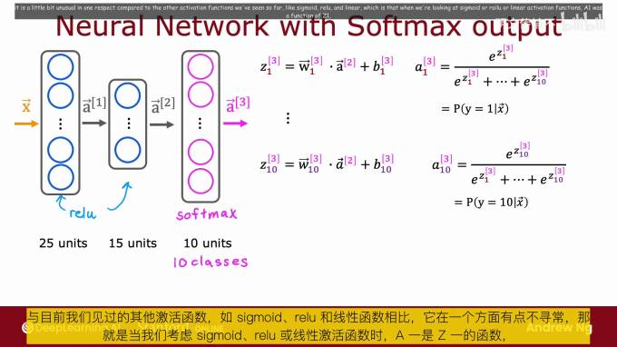
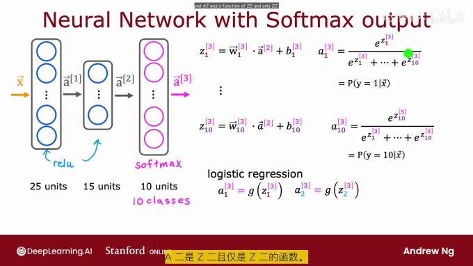
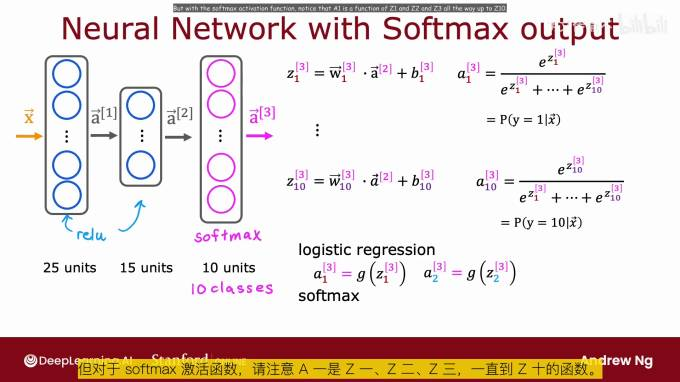
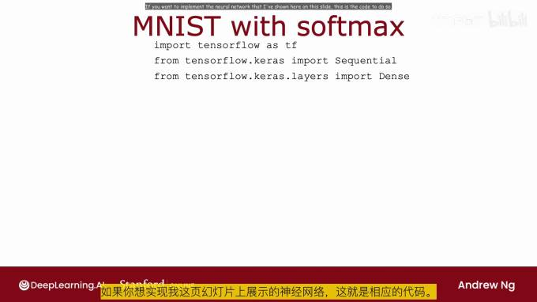
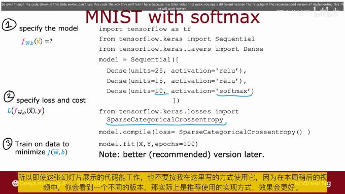

00:02为了构建一个能执行多类分类的神经网络，我们将采用 softmax 回归模型，并将其本质上放入神经网络的输出层。
00:15我们来看看具体如何操作。
00:18之前，当我们只进行两个类别的手写数字识别时，我们使用的是这种架构的神经网络。

00:28如果你现在想进行十个类别的手写数字分类，也就是从零到九的所有数字，那么我们将把这个神经网络改成有十个输出单元，就像这样。
00:44而这个新的输出层将是一个 softmax 输出层。
00:48所以有时我们会说这个神经网络有一个 softmax 输出，或者说这个输出层是一个 softmax 层。
00:57在这个神经网络中，前向传播的工作方式是，给定一个输入 x，a 一的计算方式与之前完全相同，然后第二个隐藏层的激活值 a 二也以完全相同的方式计算。H。


01:14现在我们需要计算这个输出层的激活值，也就是 a 三。
01:24如果你有十个输出类别，我们将使用这些表达式计算 z 一、z 二，一直到 z 十。
01:32所以这实际上与我们之前用于计算 z 的公式非常相似。
01:39一是 W 一与来自前一层的激活值 A 二的点积，加上 b 一，z 一到 z 十以此类推。
01:50然后 A 一等于 e 的 z 一次方除以 e 的 z 一次方加上点点点一直加到 e 的 z 十次方，这就是我们对 Y 等于一的概率的估计。

02:05A 二也类似，依此类推一直到 A 十。
02:12这样就给出了你对 Y 等于一、二，一直到第十个可能标签的概率估计。
02:22为了完整性，如果你想指明这些是与第三层相关的量，技术上我应该在这些地方加上上标三。
02:34这确实会让符号看起来更杂乱一些，但这明确指出了，例如，这是 z 下标三一的值，而这些是与该神经网络第三层的第一个单元相关的参数。
02:52有了这个，你的 softmax 输出层现在就能给出 y 为这十个可能输出标签中任何一个的概率估计。
03:02我想提一下，softmax 层，有时也称为 softmax 激活函数，与目前我们见过的其他激活函数，如 sigmoid、relu 和线性函数相比，它在一个方面有点不寻常，那就是当我们考虑 sigmoid、relu 或线性激活函数时，A 一是 Z 一的函数， n。

03:27A 二是 Z 二且仅是 Z 二的函数。

03:33换句话说，为了获得激活值，我们可以将激活函数 G，无论是 sigmoid、ReLU 还是其他什么，逐元素地应用于 Z 一、Z 二等等，来得到 A 一、A 二、A 三和 A 四。
03:51但对于 softmax 激活函数，请注意 A 一是 Z 一、Z 二、Z 三，一直到 Z 十的函数。

04:02所以这里的每一个激活值都依赖于所有的 Z 值。
04:08这是 softmax 输出或 softmax 激活函数所特有的一个性质。
04:14或者换个说法，如果你想计算 A 一到 A 十，它是从 Z 一一直到 Z 十同时作用的一个函数。
04:28这与我们目前见过的其他激活函数不同。
04:31最后，我们来看看如何在 TensorFlow 中实现它。
04:37如果你想实现我这页幻灯片上展示的神经网络，这就是相应的代码。

04:45和之前类似，指定并训练模型分为三个步骤。
04:50第一步是告诉 TensorFlow 按顺序串联三个层。
04:56第一层是这二十五个单元，使用激活函数。
05:06然后是第三层，因为现在有十个输出单元，你想要输出 A 一到 A 十。
05:14所以现在有十个输出单元。
05:17我们将告诉 TensorFlow 使用 softmax 激活函数。
05:22而你在上个视频中看到的代价函数，TensorFlow 称之为稀疏分类交叉熵函数。
05:33我知道这个名字有点拗口。
05:37对于逻辑回归，我们用的是二元交叉熵函数。
05:42这里，我们使用的是稀疏分类交叉熵函数。
05:47而“稀疏分类”指的是，你仍在将 y 分类到不同类别中。
05:58而“稀疏”指的是 y 只能取这十个值中的一个。
06:04所以每张图片要么是零，要么是一，要么是二，以此类推直到九。
06:10你不会看到一张同时是数字二和数字七的图片。
06:15所以稀疏指的就是这点。
06:17每个数字只能属于这些类别中的一种。
06:21这就是为什么你在上个视频中看到的损失函数在 TensorFlow 中被称为稀疏分类交叉熵损失函数。
06:31然后训练模型的代码就和之前完全一样了。
06:35如果你使用这段代码，就可以在一个多类分类问题上训练一个神经网络。
06:45如果你完全按照我在这里写的代码来用，它是可以工作的。
06:50但请不要实际使用这段代码，因为在 TensorFlow 中，有更好的代码版本能让 TensorFlow 工作得更好。
07:00所以即使这张幻灯片展示的代码能工作，也不要按我在这里写的方式使用它，因为在本周稍后的视频中，你会看到一个不同的版本，那实际上是推荐使用的实现方式，效果会更好。

07:18但我们会在之后的视频中再来看那个版本。
07:22所以现在你知道如何训练一个带有 softmax 上层的神经网络了，但有一点需要注意。
07:28有另一种版本的代码能让 TensorFlow 更精确地计算这些概率。
07:36我们会在下一个视频中探讨它，那个视频还会向你展示如果你要训练一个 softmax 神经网络，我推荐你使用的实际代码。
07:49让我们继续观看下一个视频。